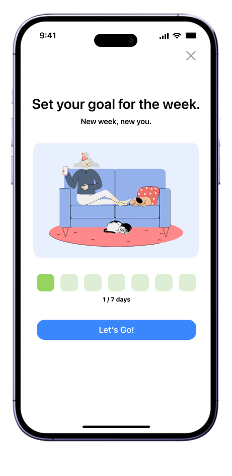

QCSA
Designing a centralized platform for the Quantum Computing Student Association, a 501(c)(3) nonprofit. Connecting students and professionals in quantum computing.

Designing a centralized platform for the Quantum Computing Student Association, a 501(c)(3) nonprofit. Connecting students and professionals in quantum computing.
The Quantum Computing Student Association (QCSA), based in Southern California, is a campus nonprofit organization that seeks to make quantum science accessible to students of all levels. QCSA's community is connected through university branches at UCLA, USC, Caltech, and UCSD.
The old logo featured UCLA's bear mascot, making it a campus-specific design. We needed a design that any university chapter could adopt.
The old site lacked a professional appeal and had many redundant pages.
Creating a design that emphasizes QCSA's mission.
To support expansion across university chapters, I created design systems that made it easy for each branch to adopt QCSA's overall branding. This ensured visual consistency across campuses while making the organization more scalable.
QCSA's new logo draws inspiration from a qubit. A simple logo without a mascot can be easily adopted by fellow university chapters.
All logos come in two types — light and dark. Make sure to use the version that maintains a color contrast of at least 4.5:1 between the background and the color of the logo.
We kept QCSA's original blue theme but shifted the muted tones — the brighter color scheme feels futuristic but still subtle.
Website Colors
The Kantumruy font is the primary font used throughout the QCSA website. It is used interchangeably across its regular, bold, and light styles within the same font family to maintain consistency and design flexibility. Changes in weight such as bold or italics can be applied to emphasize specific words or phrases, enhancing readability as needed.
Heading 1
Heading 2 — body copy sample, adjust weight and tracking as needed.
My main focus was restructuring the page sections to better communicate QCSA's mission, while making sure the redesign stayed practical enough to be implemented and launched on time.
I improved the flow of the Events page by reorganizing the subsection hierarchy to prioritize upcoming events, ensuring students could quickly find what was most relevant. To streamline navigation, I also added the photo gallery as a section rather than keeping it as its own page.
I also restructured the information architecture of the site, reducing the number of tabs on the navigation bar and removing unnecessary information.
Refining existing work instead of overhauling the scope allowed us to maintain cohesion and better reflect the QCSA vision.
Collaboration with developers played an important role in the project. By staying aware of implementation needs and technical constraints, I was able to make design decisions that supported a smoother handoff.


Improving meditation goal tracking and sharing to encourage consistency.